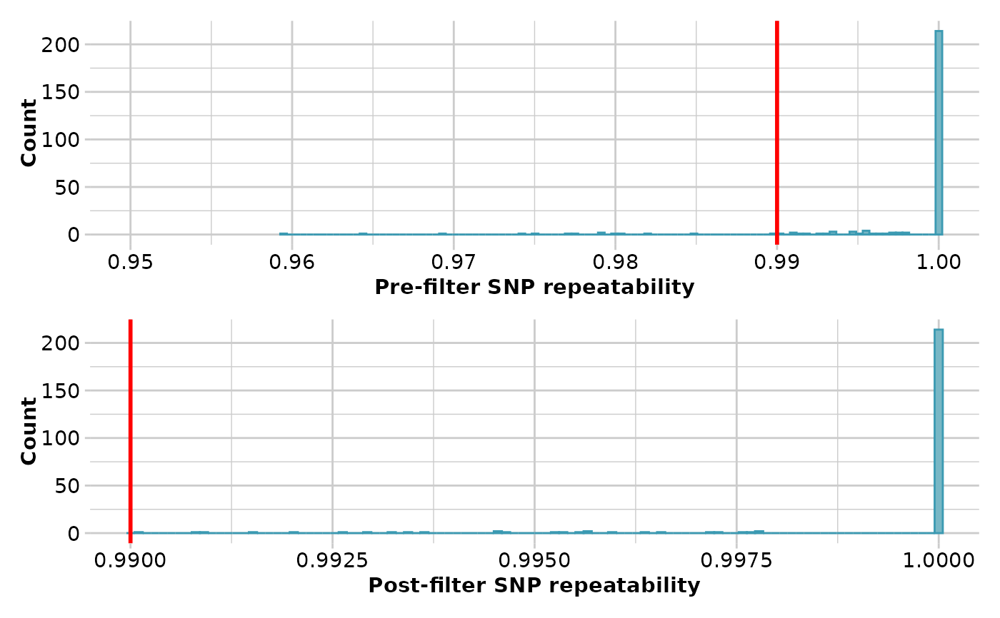

Filters loci in a genlight {adegenet} object based on average repeatability of alleles at a locus
gl.filter.reproducibility.RdSNP datasets generated by DArT have an index, RepAvg, generated by reproducing the data independently for 30 of alleles that give a repeatable result, averaged over both alleles for each locus.
SilicoDArT datasets generated by DArT have a similar index, Reproducibility. For these fragment presence/absence data, repeatability is the percentage of scores that are repeated in the technical replicate dataset.
Usage
gl.filter.reproducibility(
x,
threshold = 0.99,
plot.out = TRUE,
plot_theme = theme_dartR(),
plot_colors = two_colors,
save2tmp = FALSE,
verbose = NULL
)Arguments
- x
Name of the genlight object containing the SNP data [required].
- threshold
Threshold value below which loci will be removed [default 0.99].
- plot.out
If TRUE, displays a plots of the distribution of reproducibility values before and after filtering [default TRUE].
- plot_theme
Theme for the plot [default theme_dartR()].
- plot_colors
List of two color names for the borders and fill of the plots [default two_colors].
- save2tmp
If TRUE, saves any ggplots and listings to the session temporary directory (tempdir) [default FALSE].
- verbose
Verbosity: 0, silent or fatal errors; 1, begin and end; 2, progress log ; 3, progress and results summary; 5, full report [default 2, unless specified using gl.set.verbosity].
Value
Returns a genlight object retaining loci with repeatability (Repavg or Reproducibility) greater than the specified threshold.
See also
Other filter functions:
gl.filter.allna(),
gl.filter.callrate(),
gl.filter.heterozygosity(),
gl.filter.hwe(),
gl.filter.ld(),
gl.filter.locmetric(),
gl.filter.maf(),
gl.filter.monomorphs(),
gl.filter.overshoot(),
gl.filter.parent.offspring(),
gl.filter.pa(),
gl.filter.rdepth(),
gl.filter.secondaries(),
gl.filter.sexlinked(),
gl.filter.taglength()
Author
Custodian: Arthur Georges -- Post to https://groups.google.com/d/forum/dartr
Examples
# SNP data
gl.report.reproducibility(testset.gl)
#> Starting gl.report.reproducibility
#> Processing genlight object with SNP data
#> Reporting Repeatability by Locus
#> No. of loci = 255
#> No. of individuals = 250
#> Minimum : 0.959459
#> 1st quartile : 1
#> Median : 1
#> Mean : 0.9981525
#> 3r quartile : 1
#> Maximum : 1
#> Missing Rate Overall: 0.12
#>
#> Quantile Threshold Retained Percent Filtered Percent
#> 1 100% 1.000000 214 83.9 41 16.1
#> 2 95% 1.000000 214 83.9 41 16.1
#> 3 90% 1.000000 214 83.9 41 16.1
#> 4 85% 1.000000 214 83.9 41 16.1
#> 5 80% 1.000000 214 83.9 41 16.1
#> 6 75% 1.000000 214 83.9 41 16.1
#> 7 70% 1.000000 214 83.9 41 16.1
#> 8 65% 1.000000 214 83.9 41 16.1
#> 9 60% 1.000000 214 83.9 41 16.1
#> 10 55% 1.000000 214 83.9 41 16.1
#> 11 50% 1.000000 214 83.9 41 16.1
#> 12 45% 1.000000 214 83.9 41 16.1
#> 13 40% 1.000000 214 83.9 41 16.1
#> 14 35% 1.000000 214 83.9 41 16.1
#> 15 30% 1.000000 214 83.9 41 16.1
#> 16 25% 1.000000 214 83.9 41 16.1
#> 17 20% 1.000000 214 83.9 41 16.1
#> 18 15% 0.997674 217 85.1 38 14.9
#> 19 10% 0.994536 230 90.2 25 9.8
#> 20 5% 0.984694 243 95.3 12 4.7
#> 21 0% 0.959459 255 100.0 0 0.0
#> Completed: gl.report.reproducibility
#>
result <- gl.filter.reproducibility(testset.gl, threshold=0.99, verbose=3)
#> Starting gl.filter.reproducibility
#> Processing genlight object with SNP data
#> Removing loci with repeatability less than 0.99
#>

#> Summary of filtered dataset
#> Retaining loci with repeatability >= 0.99
#> Original no. of loci: 255
#> No. of loci discarded: 14
#> No. of loci retained: 241
#> No. of individuals: 250
#> No. of populations: 30
#> Completed: gl.filter.reproducibility
#>
# Tag P/A data
gl.report.reproducibility(testset.gs)
#> Starting gl.report.reproducibility
#> Processing genlight object with Presence/Absence (SilicoDArT) data
#> Reporting Repeatability by Locus
#> No. of loci = 255
#> No. of individuals = 218
#> Minimum : 0.952941
#> 1st quartile : 1
#> Median : 1
#> Mean : 0.9983001
#> 3r quartile : 1
#> Maximum : 1
#> Missing Rate Overall: 0.04
#>
 #> Quantile Threshold Retained Percent Filtered Percent
#> 1 100% 1.000000 228 89.4 27 10.6
#> 2 95% 1.000000 228 89.4 27 10.6
#> 3 90% 1.000000 228 89.4 27 10.6
#> 4 85% 1.000000 228 89.4 27 10.6
#> 5 80% 1.000000 228 89.4 27 10.6
#> 6 75% 1.000000 228 89.4 27 10.6
#> 7 70% 1.000000 228 89.4 27 10.6
#> 8 65% 1.000000 228 89.4 27 10.6
#> 9 60% 1.000000 228 89.4 27 10.6
#> 10 55% 1.000000 228 89.4 27 10.6
#> 11 50% 1.000000 228 89.4 27 10.6
#> 12 45% 1.000000 228 89.4 27 10.6
#> 13 40% 1.000000 228 89.4 27 10.6
#> 14 35% 1.000000 228 89.4 27 10.6
#> 15 30% 1.000000 228 89.4 27 10.6
#> 16 25% 1.000000 228 89.4 27 10.6
#> 17 20% 1.000000 228 89.4 27 10.6
#> 18 15% 1.000000 228 89.4 27 10.6
#> 19 10% 0.995745 230 90.2 25 9.8
#> 20 5% 0.986607 243 95.3 12 4.7
#> 21 0% 0.952941 255 100.0 0 0.0
#> Completed: gl.report.reproducibility
#>
result <- gl.filter.reproducibility(testset.gs, threshold=0.99)
#> Starting gl.filter.reproducibility
#> Processing genlight object with Presence/Absence (SilicoDArT) data
#> Removing loci with repeatability less than 0.99
#>
#> Completed: gl.filter.reproducibility
#>
#> Quantile Threshold Retained Percent Filtered Percent
#> 1 100% 1.000000 228 89.4 27 10.6
#> 2 95% 1.000000 228 89.4 27 10.6
#> 3 90% 1.000000 228 89.4 27 10.6
#> 4 85% 1.000000 228 89.4 27 10.6
#> 5 80% 1.000000 228 89.4 27 10.6
#> 6 75% 1.000000 228 89.4 27 10.6
#> 7 70% 1.000000 228 89.4 27 10.6
#> 8 65% 1.000000 228 89.4 27 10.6
#> 9 60% 1.000000 228 89.4 27 10.6
#> 10 55% 1.000000 228 89.4 27 10.6
#> 11 50% 1.000000 228 89.4 27 10.6
#> 12 45% 1.000000 228 89.4 27 10.6
#> 13 40% 1.000000 228 89.4 27 10.6
#> 14 35% 1.000000 228 89.4 27 10.6
#> 15 30% 1.000000 228 89.4 27 10.6
#> 16 25% 1.000000 228 89.4 27 10.6
#> 17 20% 1.000000 228 89.4 27 10.6
#> 18 15% 1.000000 228 89.4 27 10.6
#> 19 10% 0.995745 230 90.2 25 9.8
#> 20 5% 0.986607 243 95.3 12 4.7
#> 21 0% 0.952941 255 100.0 0 0.0
#> Completed: gl.report.reproducibility
#>
result <- gl.filter.reproducibility(testset.gs, threshold=0.99)
#> Starting gl.filter.reproducibility
#> Processing genlight object with Presence/Absence (SilicoDArT) data
#> Removing loci with repeatability less than 0.99
#>
#> Completed: gl.filter.reproducibility
#>